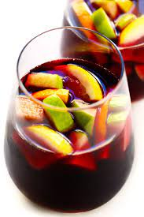

Sangria

This is a recipe for Sangria. I love sangria.
Ingredient List:
- apple
- orange
- organic brown sugar
- orange juice
- brandy
- red wine
Steps:
- Add apples, oranges, and sugar to a large pitcher and muddle with a muddler or wooden spoon for 45 seconds
- Add orange juice and brandy and muddle again to combine for 30 seconds
- Add red wine and stir to incorporate, then taste and adjust flavor as needed. I added a bit more brandy, orange juice and brown sugar. Stir to combine
- Add ice and stir once more to chill. Serve as is, or with a bit more ice